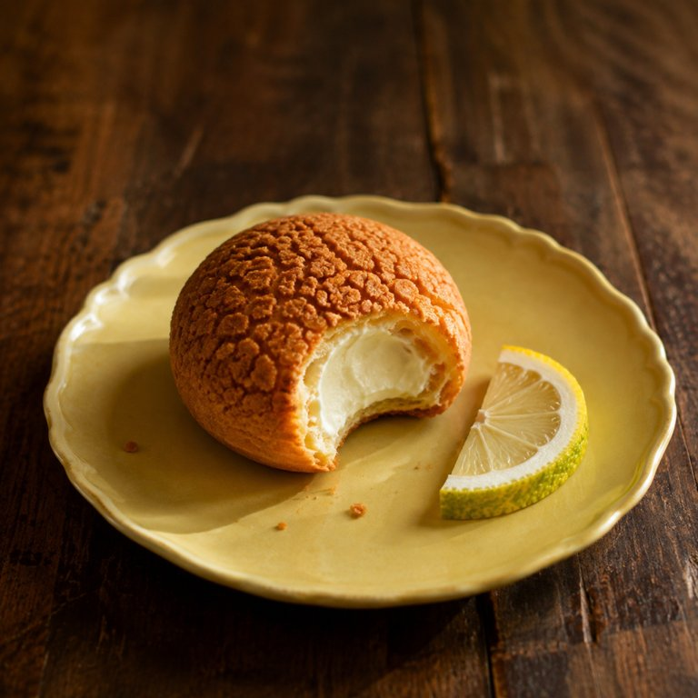

柚子马斯卡彭泡芙

盒盖内侧的便签：看着老实，满肚子奶油承不住往外漏。吃的时候想起谁了，不用说。
从盘子里捏着两边拿起来，酥皮顶掉几粒渣在盘子里。
- 包装
- 翻过来看，屁股下面一个洞，注馅留的，漏出来一点点奶油。
- 看
- 表面疙里疙瘩的，酥皮裂成一格一格的纹，金褐色，捏着有点硬。翻过来屁股那个洞里露出一点白。
- 闻
- 闻不到什么味道。凑近了也只有一点点黄油和烤过的壳的味，柚子根本闻不到。
- 入口头两秒
- 咬开的时候里面是凉的。壳先碎，薄薄一层，酥皮的渣掉在嘴唇上，然后是软，壳里面全是奶油，白的，绵的，厚，不流，一下铺满，绵的甜，凉的。柚子还是没有。
- 化的方式
- 奶油不用嚼，舌头一压就化开了，壳泡在奶油里变软，壳的内壁泛一点黄。甜落在舌根。快咽完的时候，酸才透出来一点点，在舌面和舌尖，很轻，像是奶油底下藏着的。
- 余味（大约 5 分钟散完）
- 0 分钟柚子的清香全在这会儿：嘴里最后是奶油和柚子香，酸那一点点已经过去了，甜还留在舌根。后味是黏的、密的，奶油糊在上颚上。刚咽下去就知道，一个就够了。2 分钟黏还在，奶油的绵糊着上颚，柚子香在鼻腔里比嘴里清楚。4 分钟只剩一层薄薄的黏，柚子香快没了。